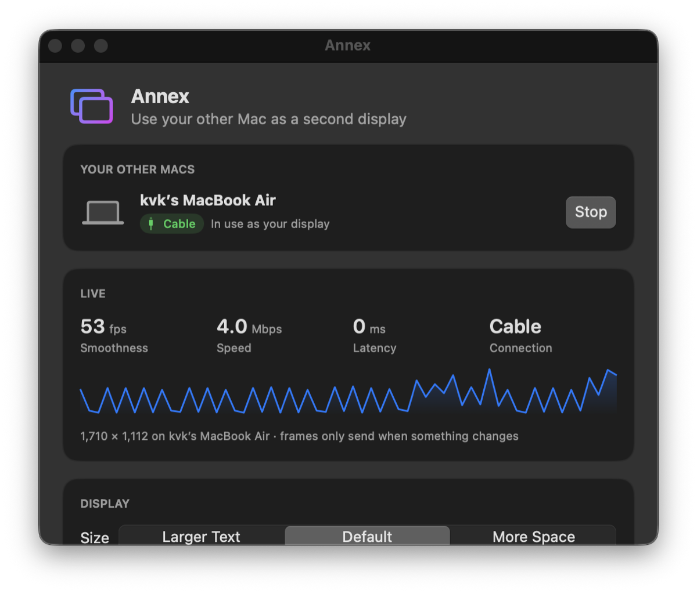

Plug in a cable, click once. That MacBook in your drawer becomes a real extended display. Full screen, no black bars, no account.
Free & open source · macOS 14 Sonoma or later · Apple silicon · latest release

No wizard, no account, no pairing codes. Install it on both Macs and you're two clicks away.
Open the download and drag Annex into Applications, on each Mac.
Your other Mac shows up by itself, over a cable or the same Wi-Fi.
On the other Mac, once. After that it reconnects on its own.
First setup measured at 102 seconds on a MacBook Pro → MacBook Air. Every time after that: 0 clicks.
Everything you'd expect from a monitor, nothing you have to configure.
Matches the other Mac's exact shape and uses the strip beside the notch. AirPlay letterboxes to 16:9.
Thunderbolt or USB-C for about 1 ms of lag, Wi-Fi when you're untethered. It switches when you plug in.
Sleep, unplug, walk away. Your windows come home, and the display comes back when the Mac does.
Frame rate, speed, latency and connection type, right in the window.
Larger Text, Default or More Space. Drag the display to any side of your Mac, just like System Settings.
Mac to Mac over your own cable or network. No cloud, no account, no analytics.
AirPlay to Mac is built for mirroring, not for using a Mac as a monitor.
| AirPlay to Mac | Annex | |
|---|---|---|
| Fills a MacBook screen | 16:9 only, black bars | Exact fit, notch area too |
| Wired connection | No | Thunderbolt / USB-C |
| Reconnects automatically | No | Yes |
| Shows speed & latency | No | Yes |
| Price | Built in | Free, open source |
Full details in the user manual.
Annex isn't notarized by Apple yet. Open System Settings → Privacy & Security, scroll down, and click Open Anyway. You only do this once per Mac.
A Thunderbolt or USB4 cable, or a USB-C cable that carries data. Charge-only cables won't work. No cable? Keep both Macs on the same Wi-Fi.
A USB-C or Thunderbolt cable carries power as well as data, so with no charger plugged in, one MacBook charges the other. Plug a charger into either Mac and both stay powered. On battery, Annex warns you and offers a one-click switch to Wi-Fi so you can unplug the cable.
That's how macOS lets an app send what's on the extra display to your other Mac. Annex only captures the extra display it creates, and the picture goes straight to your other Mac.
Not yet. Use your main Mac's keyboard and trackpad; the pointer moves onto the other screen like any monitor. Press Esc on the other Mac to get its screen back.
Right now it needs Apple silicon and macOS 14 or later on both Macs.
In Annex, open Activity → Report a Problem…. It opens a GitHub issue with your macOS version and recent log already filled in. You can review everything before you submit.
Free and open source under the MIT license.